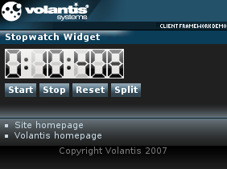

The Stopwatch widget can be used to measure time and record lap times. The stopwatch uses the same display mechanism as the Clock widget. They also share some XDIME elements and style properties. See Showing current time for more information.

<widget:stopwatch id="myStopwatch">
<widget:clock-content type="digit" value="0">
<object src="/images/clock/clockWidget_grey_0_r_01.mimg">0</object>
</widget:clock-content>
<widget:clock-content type="digit" value="1">
<object src="/images/clock/clockWidget_grey_1_r_01.mimg">1</object>
</widget:clock-content>
...
</widget:stopwatch>
<style type="text/css" media="handheld,all">
#myStopwatch {
mcs-count-mode: lap;
}
</style><widget:button action="myStopwatch#start">Start</widget:button> <widget:button action="myStopwatch#stop">Stop</widget:button> <widget:button action="myStopwatch#reset">Reset</widget:button> <widget:button action="myStopwatch#split">Split</widget:button>
<?xml version="1.0" encoding="UTF-8"?>
<html xmlns="http://www.w3.org/2002/06/xhtml2"
xmlns:mcs="http://www.volantis.com/xmlns/2006/01/xdime/mcs"
xmlns:template="http://www.volantis.com/xmlns/marlin-template"
xmlns:widget="http://www.volantis.com/xmlns/2006/05/widget">
<head>
<title>Stopwatch Widget</title>
<link rel="mcs:theme" href="/themes/main.mthm"/>
<link rel="mcs:layout" href="/layouts/main.mlyt"/>
<style type="text/css" media="handheld,all">
#myStopwatch {
mcs-datetime-format: '%i%1%s%1%S';
mcs-count-mode: lap;
}
</style>
</head>
<body>
<template:apply href="templates/demo-main.xdtpl">
<template:binding name="title" value="Stopwatch Widget"/>
<template:binding name="content">
<template:complexValue>
<widget:stopwatch id="myStopwatch">
<widget:clock-content type="digit" value="0">
<object src="/images/clock/clockWidget_grey_0_r_01.mimg">0</object>
</widget:clock-content>
<widget:clock-content type="digit" value="1">
<object src="/images/clock/clockWidget_grey_1_r_01.mimg">1</object>
</widget:clock-content>
<widget:clock-content type="digit" value="2">
<object src="/images/clock/clockWidget_grey_2_r_01.mimg">2</object>
</widget:clock-content>
<widget:clock-content type="digit" value="3">
<object src="/images/clock/clockWidget_grey_3_r_01.mimg">3</object>
</widget:clock-content>
<widget:clock-content type="digit" value="4">
<object src="/images/clock/clockWidget_grey_4_r_01.mimg">4</object>
</widget:clock-content>
<widget:clock-content type="digit" value="5">
<object src="/images/clock/clockWidget_grey_5_r_01.mimg">5</object>
</widget:clock-content>
<widget:clock-content type="digit" value="6">
<object src="/images/clock/clockWidget_grey_6_r_01.mimg">6</object>
</widget:clock-content>
<widget:clock-content type="digit" value="7">
<object src="/images/clock/clockWidget_grey_7_r_01.mimg">7</object>
</widget:clock-content>
<widget:clock-content type="digit" value="8">
<object src="/images/clock/clockWidget_grey_8_r_01.mimg">8</object>
</widget:clock-content>
<widget:clock-content type="digit" value="9">
<object src="/images/clock/clockWidget_grey_9_r_01.mimg">9</object>
</widget:clock-content>
<widget:clock-content type="separator" value="1">
<object src="/images/clock/cell_5_11x37.mimg">:</object>
</widget:clock-content>
<widget:clock-content type="separator" value="2">
<object src="/images/clock/clockWidget_grey_null_r_01.mimg"> </object>
</widget:clock-content>
<widget:clock-content type="separator" value="3">
<object src="/images/clock/clockWidget_grey_pause_r_01.mimg"> </object>
</widget:clock-content>
</widget:stopwatch>
<div class="buttons">
<widget:button action="myStopwatch#start">Start</widget:button>
<widget:button action="myStopwatch#stop">Stop</widget:button>
<widget:button action="myStopwatch#reset">Reset</widget:button>
<widget:button action="myStopwatch#split">Split</widget:button>
</div>
</template:complexValue>
</template:binding>
</template:apply>
</body>
</html>
| Name | Purpose |
|---|---|
| div | A section used to add extra structure to documents. Style sheets can be used to control the presentation. |
| object | A reference to a media resource. Object allows a variety of media resources to be placed on the rendered page. The resource may be specified as an image policy or a device depended mime type. Object also allows the control of media transcoding to ensure the resource will render on the requesting agent. See References to media for details. |
| widget:button | A general purpose element, used by widgets which need a button-like control. |
| widget:clock-content | Defines a markup for the clock digits, separators, AM/PM indicators, as well as the day and month names. It can contain any markup, in particular text and images. |
| widget:stopwatch | Defines a stopwatch. |
| Core attributes | Attributes that are common to XDIME 2 elements. |